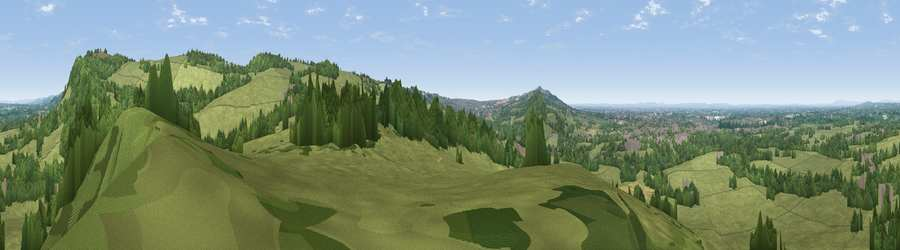

Viewpoint near Timbersbrook
#12651 in England · top 15% of its area beats it · near Timbersbrook · path 147 mWhere it is
The exact computed spot (SJ 89325 62325). Click the marker for map links.
Public access: the nearest public right of way is about 147 m away — the final stretch may cross private land. Computed from Natural England's CRoW access layer and OpenStreetMap rights of way — not the legal definitive map. Always verify locally.
The view, rendered

A 360° render of this exact spot computed from the terrain model, tree cover and land cover — summer colours, afternoon light, calibrated against photographs of famous viewpoints. Real trees, hedges and buildings will differ in detail.
The panorama
Grey silhouette: terrain skyline in each direction (720 bearings, Earth curvature and refraction included). Dashed green: skyline with trees (+15 m) and buildings (+8 m) as obstacles. Blue strip: how far the ground is visible on each bearing.
Where the view opens
Wedge length = distance to the farthest visible ground on that bearing (vegetation-aware). Rings at 10, 25 and 50 km.
What fills the view
68% grassland · 28% woodland · 3% built-up · 2% cropland
Angular shares of the visible panorama (visual magnitude), not map area. Landscape diversity 0.35 (0–1 Shannon).
Key numbers
More beautiful places nearby
The staircase of upgrades: each row has a higher view potential than everything closer. Driving times are estimates from straight-line distance, calibrated against real road routing — check an actual route before setting out.
| Place | Direction | Drive | Score |
|---|---|---|---|
| Viewpoint near Timbersbrook | NNE · 1 km | ~3 min | 69.1 |
| Viewpoint near Timbersbrook | NE · 2 km | ~5 min | 74.4 |
| Viewpoint near Mow Cop | SW · 6 km | ~12 min | 78.9 |
| Viewpoint near Mow Cop | SW · 6 km | ~13 min | 80.2 |
| Viewpoint near Harthill | W · 39 km | ~58 min | 80.5 |
| White Brow | NNW · 55 km | ~77 min | 82.9 |
| Viewpoint near Little Wenlock | SSW · 60 km | ~82 min | 84.2 |
| The Wrekin | SSW · 60 km | ~83 min | 85.0 |
53.15794, -2.16110 · source: screening · position refined by local search. Computed location — check access rights before visiting.